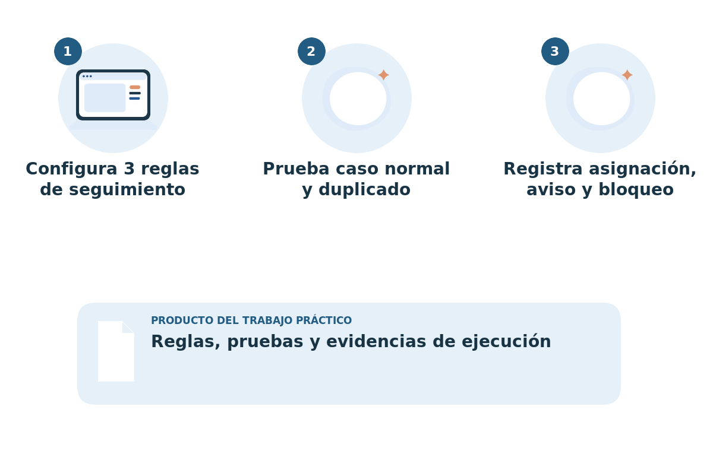

<div style="font-family: 'Segoe UI', Arial, sans-serif; color: #333; line-height: 1.6; max-width: 100%; margin-bottom: 20px;">
  <div style="background-color: #ffffff; background-image: linear-gradient(135deg, #ffffff 0%, #f8f9fa 100%); border: 1px solid #dee2e6; border-radius: 15px; padding: 25px 30px; box-shadow: 0 4px 12px rgba(0,0,0,0.05); position: relative; overflow: hidden;">
    <div style="position: absolute; left: 0; top: 0; bottom: 0; width: 6px; background: #0056b3;" aria-hidden="true"> </div>
    <div style="position: relative; z-index: 1;">
<h2 style="color: #1c3055; margin-top: 0; font-size: 1.4rem; font-weight: bold;">Entrega del Trabajo Práctico-Experimental de la Unidad 2</h2>
<p></p>

<p><strong>Asignatura:</strong> CRM y Seguimiento de clientes II<br>
<strong>Actividad: Tres reglas para organizar el seguimiento</strong><br><strong>Evidencia:</strong> Un documento con los acuerdos de equipo, las tres reglas, su dibujo y las pruebas de funcionamiento.</p>
<p>El equipo ficticio de AndinaSoluciones tiene un asesor para Sierra, otro para Costa y un especialista en cuentas corporativas. Algunas consultas quedan sin responsable; otras generan avisos repetidos. Organiza tres reglas para resolverlo.</p>
<p><strong>Qué completar</strong></p>
<ol><li>Acuerda con tu equipo cómo se repartirán las funciones y guarda ese acuerdo. Si el docente autorizó trabajo individual, registra las tres funciones en tu documento.</li><li>Define tres reglas: asignar cada nueva consulta por provincia o tipo de cuenta; avisar al responsable si una «Cotización enviada» lleva 48 horas sin actividad; impedir que el mismo cambio genere avisos o mensajes repetidos.</li><li>Dibuja cuándo empieza cada regla, qué revisa, qué hace y cuándo termina. Configúrala en el sistema o simulador disponible y registra las condiciones exactas.</li><li>Prueba una consulta completa de Guayaquil para una cuenta corporativa. Comprueba la asignación y el aviso de seguimiento. Luego prueba una consulta sin provincia: debe pasar a revisión manual.</li><li>Activa dos veces el mismo cambio y comprueba que no se duplique la acción. Explica cómo evitas mensajes innecesarios y el uso repetido de recursos.</li><li>Reúne el dibujo, las reglas, las capturas o registros de prueba y los acuerdos. Cita a Paredes Bermeo y explica cómo evitaste duplicados y consultas sin responsable.</li></ol>
<p><strong>Cómo entregar</strong></p>
<p>Entrega tu trabajo una sola vez al cierre de la semana 4. En esta Tarea de Moodle, selecciona <strong>Agregar entrega</strong>, adjunta tu evidencia y pulsa <strong>Guardar cambios</strong>. Si aparece <strong>Enviar tarea</strong>, púlsalo y comprueba el estado.</p>
<p><strong>Nombre del expediente:</strong> Apellido_Nombre_Trabajo_experimental_Unidad_2.</p>
<p><strong>Formato:</strong> Entrega un documento con el dibujo y las pruebas. Si usaste una herramienta de diagramas, adjunta su archivo o una copia legible.</p>
<p>Conserva el registro original del caso y anota las correcciones en tu expediente. Entrega el trabajo autónomo por separado.</p>
<details><summary style="color:#0056b3;font-weight:bold;cursor:pointer;">Rúbrica de la práctica · 16 puntos</summary><div style="overflow-x:auto;"><table class="table" style="width:100%;border-collapse:collapse;font-size:.9rem;"><thead><tr><th scope="col" style="padding:8px;background:#eef4fb;text-align:left;">Criterio y puntaje máximo</th><th scope="col" style="padding:8px;background:#eef4fb;text-align:left;">Completo (4 puntos · 100 %)</th><th scope="col" style="padding:8px;background:#eef4fb;text-align:left;">Adecuado (3 puntos · 75 %)</th><th scope="col" style="padding:8px;background:#eef4fb;text-align:left;">Parcial (2 puntos · 50 %)</th><th scope="col" style="padding:8px;background:#eef4fb;text-align:left;">Inicial (1 punto · 25 %)</th><th scope="col" style="padding:8px;background:#eef4fb;text-align:left;">Ausencia (0 puntos · 0 %)</th></tr></thead><tbody><tr><td style="padding:8px;border-bottom:1px solid #dee2e6;vertical-align:top;">1. Pertinencia del análisis <strong>(4 puntos)</strong></td><td style="padding:8px;border-bottom:1px solid #dee2e6;vertical-align:top;">Diseña las tres reglas: asignación, aviso de seguimiento y bloqueo de repeticiones. Incluye el caso sin provincia.</td><td style="padding:8px;border-bottom:1px solid #dee2e6;vertical-align:top;">Diseña las tres reglas con buen enfoque operativo y alguna omisión menor en el tratamiento de datos incompletos.</td><td style="padding:8px;border-bottom:1px solid #dee2e6;vertical-align:top;">Presenta reglas aisladas sin coordinación entre roles o deja sin resolver el caso del mismo cambio repetido dos veces.</td><td style="padding:8px;border-bottom:1px solid #dee2e6;vertical-align:top;">Hay un intento evaluable. Propone reglas genéricas desconectadas del flujo comercial o que permiten envíos masivos repetitivos sin control.</td><td style="padding:8px;border-bottom:1px solid #dee2e6;vertical-align:top;">No presenta evidencia del criterio «Pertinencia del análisis» que permita evaluarlo.</td></tr><tr><td style="padding:8px;border-bottom:1px solid #dee2e6;vertical-align:top;">2. Aplicación conceptual <strong>(4 puntos)</strong></td><td style="padding:8px;border-bottom:1px solid #dee2e6;vertical-align:top;">Define cuándo empieza, qué comprueba y qué hace cada regla. Registra las pruebas normal, sin provincia y repetida.</td><td style="padding:8px;border-bottom:1px solid #dee2e6;vertical-align:top;">Implementa y prueba las tres reglas con detalles menores en la documentación de una de las condiciones límite.</td><td style="padding:8px;border-bottom:1px solid #dee2e6;vertical-align:top;">Presenta configuraciones incompletas o describe teóricamente las reglas sin comprobar su comportamiento ante repetición.</td><td style="padding:8px;border-bottom:1px solid #dee2e6;vertical-align:top;">Hay un intento evaluable. No logra estructurar reglas condicionales funcionales ni aporta pruebas verificables de ejecución.</td><td style="padding:8px;border-bottom:1px solid #dee2e6;vertical-align:top;">No presenta evidencia del criterio «Aplicación conceptual» que permita evaluarlo.</td></tr><tr><td style="padding:8px;border-bottom:1px solid #dee2e6;vertical-align:top;">3. Calidad del entregable <strong>(4 puntos)</strong></td><td style="padding:8px;border-bottom:1px solid #dee2e6;vertical-align:top;">Integra acuerdos colaborativos, diagrama legible, tabla de reglas y evidencias de pruebas en un único documento ordenado y claro.</td><td style="padding:8px;border-bottom:1px solid #dee2e6;vertical-align:top;">Entrega los apartados completos con detalles menores de legibilidad en el diagrama o capturas.</td><td style="padding:8px;border-bottom:1px solid #dee2e6;vertical-align:top;">Omite el diagrama, las evidencias de prueba o los acuerdos asincrónicos de trabajo colaborativo.</td><td style="padding:8px;border-bottom:1px solid #dee2e6;vertical-align:top;">Hay un intento evaluable. Presenta un documento fragmentado o incompleto que impide verificar las tres reglas configuradas.</td><td style="padding:8px;border-bottom:1px solid #dee2e6;vertical-align:top;">No presenta evidencia del criterio «Calidad del entregable» que permita evaluarlo.</td></tr><tr><td style="padding:8px;border-bottom:1px solid #dee2e6;vertical-align:top;">4. Uso de fuentes y referencias <strong>(4 puntos)</strong></td><td style="padding:8px;border-bottom:1px solid #dee2e6;vertical-align:top;">Fundamenta las prácticas de seguimiento en Paredes Bermeo y lecturas de la unidad con formato de citas de la guía y rotula los datos como simulados.</td><td style="padding:8px;border-bottom:1px solid #dee2e6;vertical-align:top;">Cita las fuentes pertinentes y distingue el escenario simulado con errores menores de formato en la lista final.</td><td style="padding:8px;border-bottom:1px solid #dee2e6;vertical-align:top;">Relaciona parcialmente sus decisiones con la bibliografía o presenta fallas frecuentes en citas.</td><td style="padding:8px;border-bottom:1px solid #dee2e6;vertical-align:top;">Hay un intento evaluable. Presenta referencias inventadas, omite atribución o expone registros ficticios como casos reales.</td><td style="padding:8px;border-bottom:1px solid #dee2e6;vertical-align:top;">No presenta evidencia del criterio «Uso de fuentes y referencias» que permita evaluarlo.</td></tr></tbody></table></div></details>
    </div>
  </div>
</div>

